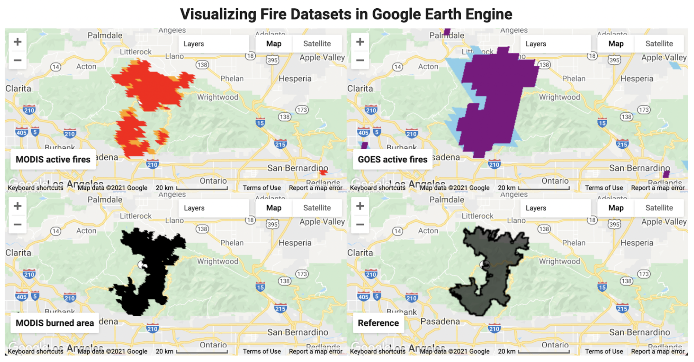

Learning objectives
- Understand how satellites detect active fires using thermal bands.
- Access and visualize MODIS, GOES, and FIRMS fire datasets in Earth Engine.
- Calculate burn severity using pre/post-fire imagery and NBR.
- Build an interactive fire monitoring application.
Why it matters
Wildfires are increasing in frequency and intensity due to climate change. Remote sensing provides near real-time fire detection that helps emergency responders, land managers, and communities. After fires, satellite-derived burn severity maps guide ecosystem recovery efforts and help assess damage to infrastructure.

Module overview
This case study walks you through a complete fire monitoring workflow, from understanding the physics of fire detection to building an interactive application. You will work with real fire data from the 2020 Bobcat Fire in California.
| Part | Topic | What You'll Learn |
|---|---|---|
| Theory | Fire Detection Physics | How thermal sensors detect fire hotspots |
| Fire Datasets | Data Sources | MODIS, VIIRS, GOES, FIRMS data access |
| Case Study | Bobcat Fire | Real-world fire analysis example |
| Build an App | UI Development | Interactive fire monitoring dashboard |
Quick win: view active fires
Run this code to see recent fire detections worldwide:
// Load MODIS active fire data (last 7 days)
var fires = ee.ImageCollection('MODIS/061/MOD14A1')
.filterDate(ee.Date(Date.now()).advance(-7, 'day'), ee.Date(Date.now()))
.select('FireMask');
// Create a maximum composite to show all fires
var fireMax = fires.max();
// Mask non-fire pixels and visualize
var fireMask = fireMax.gte(7); // Confidence >= 7
Map.addLayer(fireMask.selfMask(), {palette: ['orange', 'red']}, 'Active Fires');
Map.setCenter(-119.5, 34.5, 6); // California
print('Fire data loaded successfully!');What you should see
Orange and red points indicating fire detections over the past week. Try zooming to different regions to explore global fire patterns.
Key terms
- Active fire
- A fire currently burning at the time of satellite overpass, detected by thermal anomalies.
- Burn severity
- The degree to which vegetation and soil are affected by fire, measured using spectral indices.
- NBR (Normalized Burn Ratio)
- A spectral index using NIR and SWIR bands to assess fire damage: (NIR - SWIR) / (NIR + SWIR).
- FIRMS
- Fire Information for Resource Management System - NASA's near real-time fire monitoring service.
Try it: Explore fire patterns
- Change the date range to look at fires from last summer (peak fire season).
- Zoom to Australia and observe fire patterns during their summer (December-February).
- Compare fire activity between the Northern and Southern hemispheres.
This module builds on
- Image Collections - filtering by date and region
- Band Arithmetic - calculating spectral indices
- UI Widgets - building interactive applications
Next steps
Continue with the fire monitoring case study:
Going Deeper: EEFA Book
This module gives you the foundation. To explore further, see Chapter A3.5 (Monitoring Fire) in the Cloud-Based Remote Sensing with Google Earth Engine (EEFA Book).